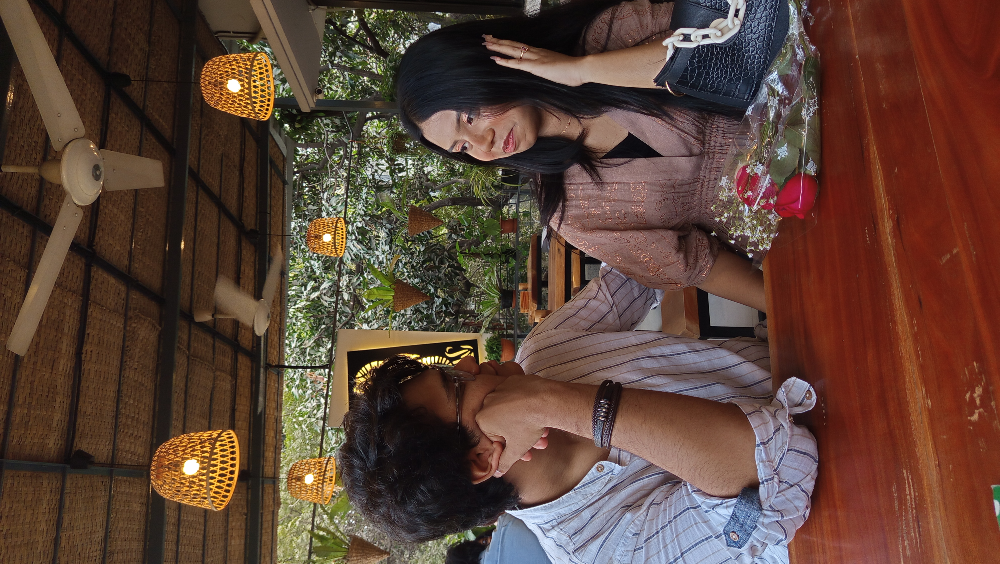
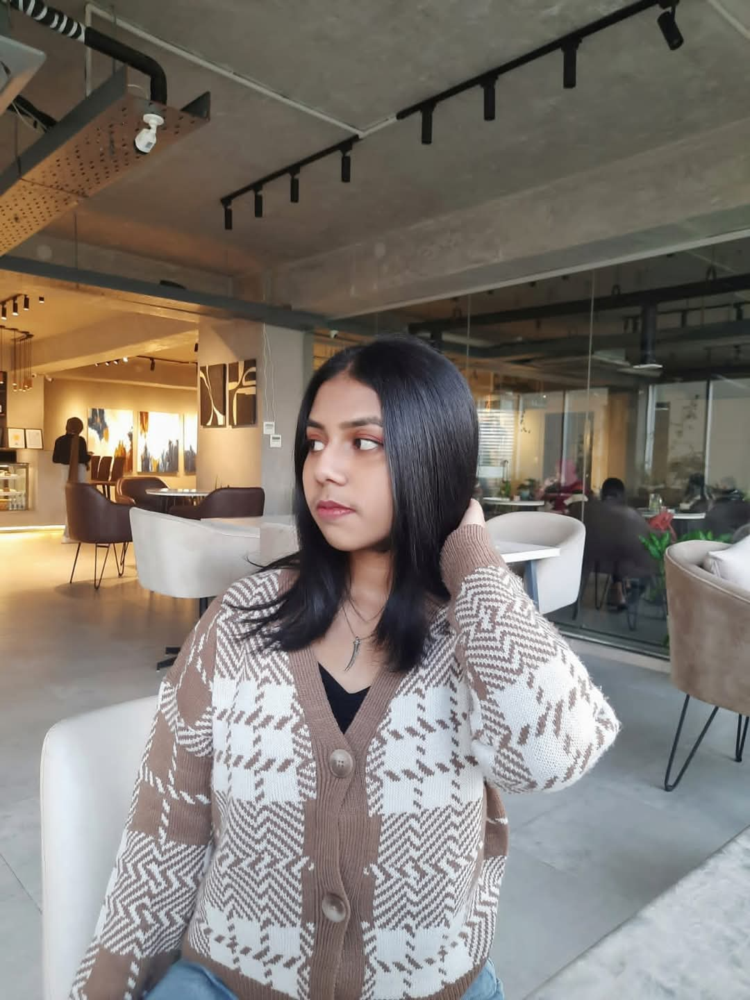
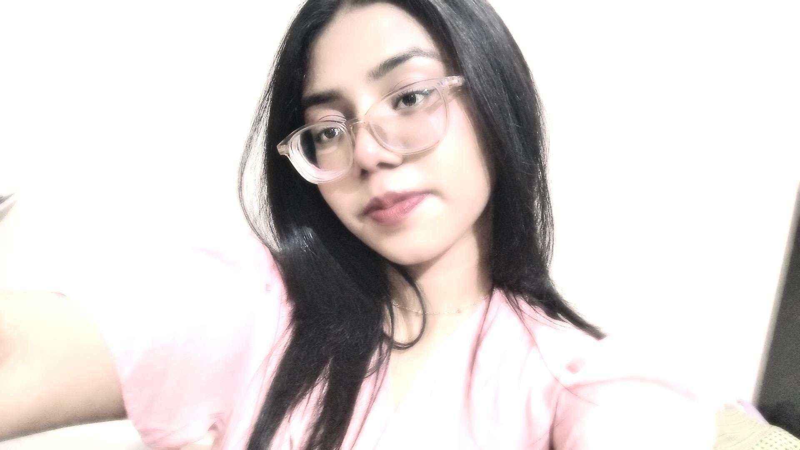
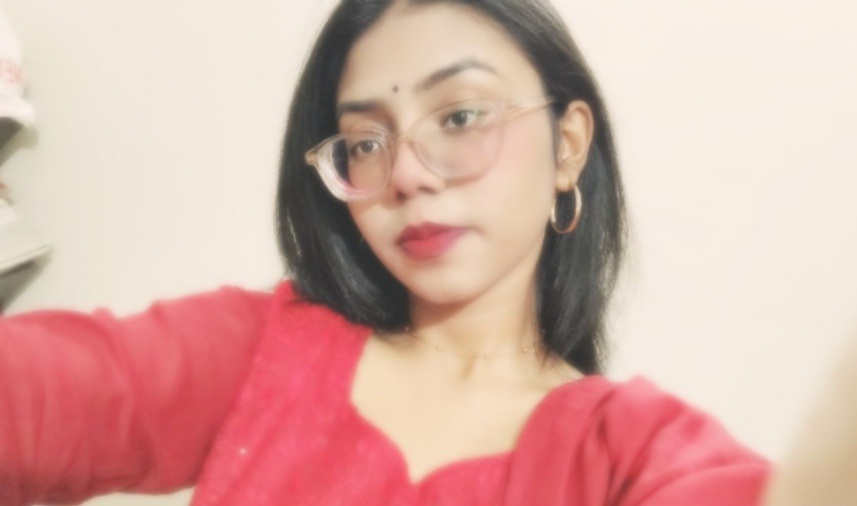
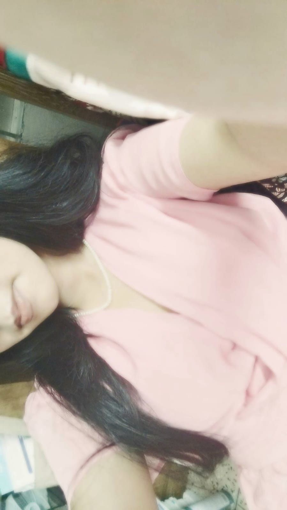
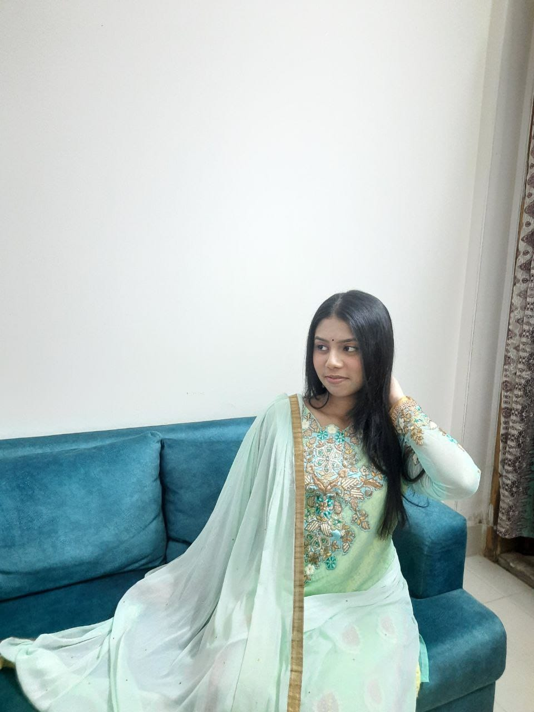

Happy birthday my love. The thing is I'm really bad at card making and my handwriting is downright awful (unlike yours which is absolutely heavenly), but I can be creative and I am a tech nerd (somewhat), so I decided to create this for you because I can't be there with you exactly at 12 AM (no matter how badly I want to) and don’t worry you are definitely going to get flowers the next time we meet but for now I wanted to make this for you. Ik u would have liked something more physical so that u could keep it in your diary but i hope this will make you at least a bit happy.
U and i have been through so much Ms. Ashfika Audry (i plan on turning that to Mrs 🤭🤭) and i have made a lot of mistakes and fucked up a lot, but even then u still came back to me and chose me and had all those difficult conversations with me and stayed with me, even when u didn’t even want to hear my voice, u still called back to check up on me to make sure i was doing okay and heard me out even when i was screaming and breaking down and falling apart. That is one of the many reasons why, even though u screamed at me and said so many things to me, I heard it all and listened to everything that u said. i can confidently say that u make me want to become the best version of myself Jaan and I am trying my best babe, i truly am.


and to be honest, if i was given the choice that do i want to do it all over again, i would say yes without a single doubt because everything that happened and everything that we went through, we talked it out, we waited on each other and was patient and we helped each other become better and in the process, became closer as well. Anytime I want to go to someone when I need peace or rest or calmness, you are the first person I will run to. when i want to rant, or bitch about something, or vent, or want to spend time with someone, there is no one I would rather go to but you.
I meant it when I said u are my everything babe. istg i love everything about you. If I had to list every good thing there is about you, I do not think I will ever finish complementing you. just to name a few. u look absolutely divine. I mean u are the hottest and sexiest person I have ever seen and the cutest at the same time. All the time I want to show so much love to every inch of you and you ofc (u know for a fact i am horny all the time😅😅). You are literally perfect, and I love you for who you are. I love the cute little tummy that you have. I love to squish it and keep my hands on it so much, literally my favorite pillow (right beside your thighs ofc🤗🤗). and you’re height is so cute, literally perfect for me, and i swear i could stare at you with doe eyes for hours on end, just taking in every single inch of your perfection and trying to process it all because it just so (melting away). and you are literally so cute. Like when u cannot even look into my eyes without blushing up redder than a tomato, I swear my tummy does a backflip, or when you are caring about me and telling me ways to take care of myself, ughhh so goodddd. absolutely sensational jaan. or when u come to me and talk to me about random things and you are just being goofy with me, i swear to God i can NEVER get enough of that. It warms me up so much seeing you so happy and smiling. And how is it that you are so smart because I am genuinely very impressed and proud of you by looking at how dedicated you are to your studies. and your voice is so goddamn beautiful, especially when you are singing, i swear they are literally ear candy.


I hope to meet you as soon as I can babe. I miss you so damn much every single second you are not in my arms, even when we are on call, I miss holding you and giving you hugs. i love you so so so so so so much and i hope you have THE BEST day today seeing how it’s your bday, i wish i could be there to make it more special and i hope i can be there, because i will be going all out. tumi oidin ekta empty stomach e bashay jaytosna na mane na if we meet. I will personally make sure you are stuffed with food and u better come hungry because I know for a fact i am going to LOVEEE seeing my baby girl eating.
I love you so much babe. I can go on and on and on, but this is already MASSIVE so I am going to stop right here. MWWWWAHHHHHH.
